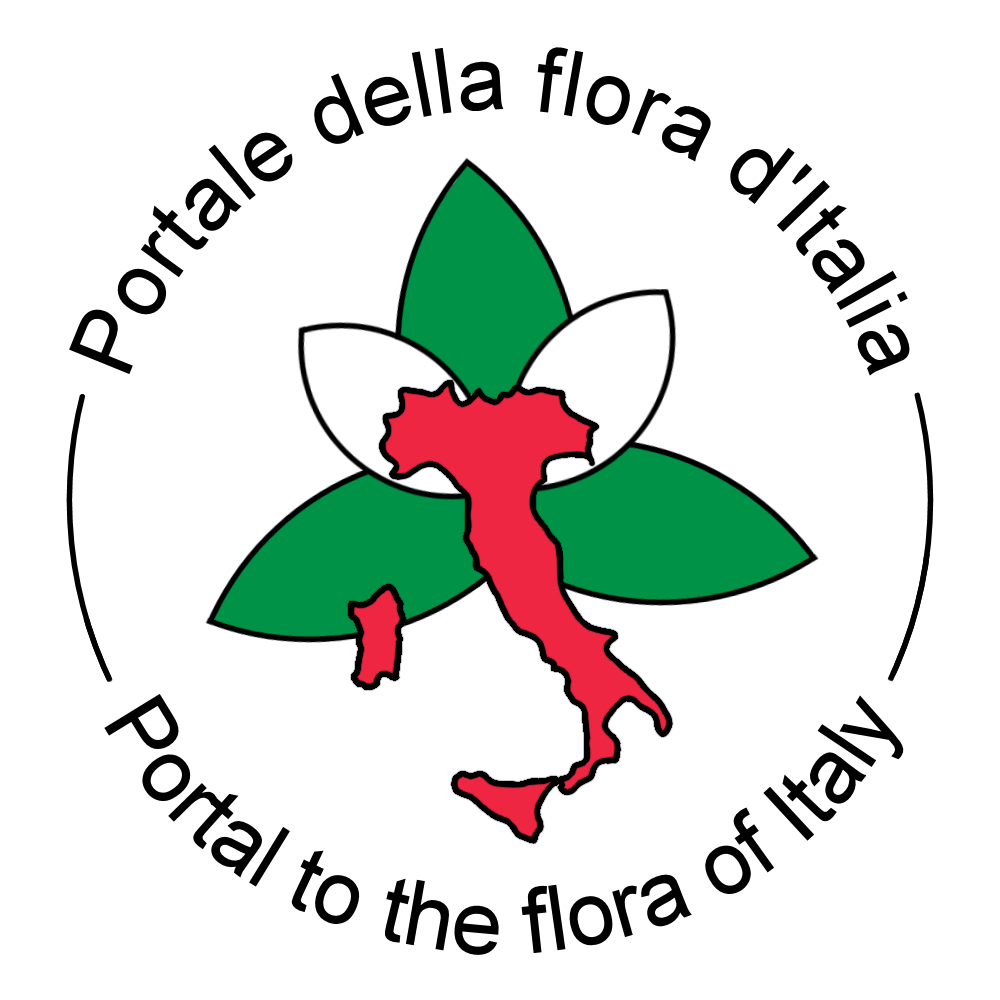

Sites
Places of investigation, described through their location, archaeological character, chronology and sources. A site may contain several contexts and evidence from different periods.
ARBOREA brings together, harmonises and georeferences archaeobotanical evidence from Central Italy, linking botanical records, archaeological contexts and bibliographic sources. 1
The project name stands for ARchaeoBOtanical geoReferenced rEcords of Ancient Italy.
Developed within CHANGES, Spoke 8, ARBOREA brings together information from the archaeobotanical literature to investigate landscapes, chronologies and plant use. The project combines the harmonisation of existing records with research and digital documentation, recognising plant macroremains as part of cultural heritage. 1, 3
Botanical records are linked to the sites and archaeological contexts from which they derive. Where available, geometries, location sources and spatial precision document their position.
From regional distributions to individual contexts, the map offers a spatial approach to the evidence. Location accuracy depends on the available documentation. 2
Explore the landscapePlaces of investigation, described through their location, archaeological character, chronology and sources. A site may contain several contexts and evidence from different periods.
The archaeological units from which the remains derive. Contexts may be organised hierarchically, linking more specific units to broader ones.
Records linking a taxon and a recorded plant part to an archaeological context. Depending on the source, they may include preservation, numerical quantities, relative abundance descriptions, weights and sample references. 2
An occurrence is a botanical record. Several occurrences may derive from the same physical sample. A presence statement or a relative abundance symbol is retained as evidence and is not converted into a numerical count.
wood, with charring and plant part unspecified.Remain type, preservation and plant part describe distinct aspects of each occurrence.
carpologicalSeeds, fruits and other elements recorded under this value in the corpus.
woodWood remains, including charcoal. Anthracology concerns the study of wood charcoal.
fibreRemains recorded as fibres.
artefactOccurrences recorded as artefacts.
textileOccurrences recorded as textiles.
charringThermal alteration of organic material.
waterloggingPreservation in water-saturated deposits.
mineralizationPreservation associated with mineral impregnation or replacement.
desiccationPreservation favoured by limited water availability.
mummificationA term retained from the source description.
compressionA recorded trace of compressed plant material.
imprintAn indirect trace preserving the impression of a plant.
anaerobic conditionsA recorded description of the conditions of preservation.
Examples from the current database. Mixed descriptions are kept together when the source reports several plant parts for one occurrence.
seedstemgrainfruitcaryopsisacheneendocarppipcotyledonglume baserachisspikeletleafrootpericarpnutCaryopses and achenes are fruits. The meaning of recorded values such as grain, remain and pip depends on the source and the taxon.
Source names and normalised names remain distinguishable. Nomenclatural updates must respect the original identification rank: a more specific name does not, by itself, document a more precise identification of the remains. The abbreviation sp. indicates an undetermined species within the stated genus; cf. expresses uncertainty in the identification.

Accepted names and synonyms of the Italian vascular flora, based on national checklists.
A complementary nomenclatural and botanical resource.
Reference thesaurus for chronological labels used in the project.
Period definitions linked to sources, dates and geographical scope.
Explore the distribution of sites by region and province.
Investigate sites, contexts and botanical records on the map.
Explore taxa or contexts, combine selections, and compare groups and their quantitative coverage.